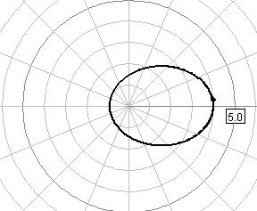

The Central Force JavaScript Model computes the trajectory of a particle acted on by a central force. The model reads the force F(r) using a JavaScript (JS) mathematical expression parser and uses a 5(4) adaptive step Runge-Kutta algorithm to compute the trajectory. This model is designed to test the speed of the JS parser and the accuracy of the EJS JavaScript ODE solver.
The Central Force JavaScript Model was developed by Wolfgang Christian using version 5 of the Easy Java Simulations (EJS 5) modeling tool. Although EJS is a Java program, EJS 5 creates stand alone JavaScript programs that run in almost any PC or tablet browser. Information about EJS is available at: <http://www.um.es/fem/Ejs/> and in the OSP ComPADRE collection <http://www.compadre.org/OSP/>.